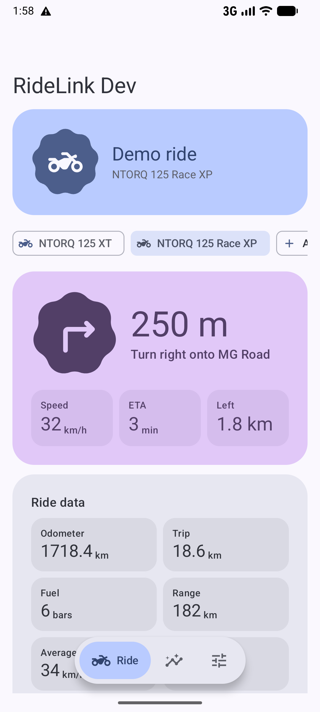
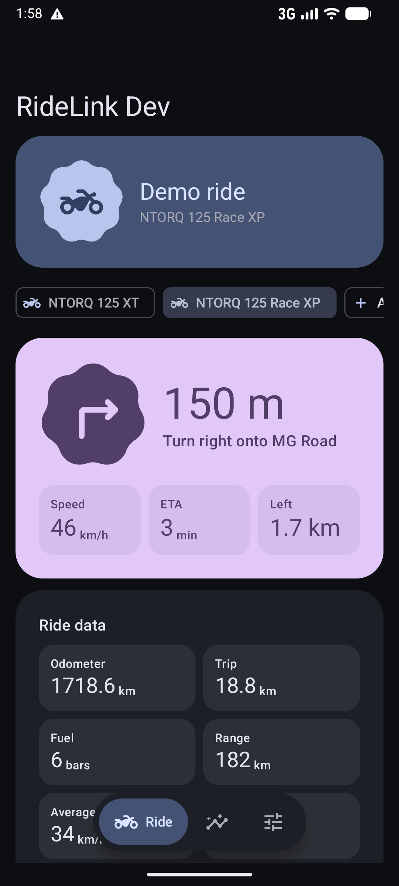
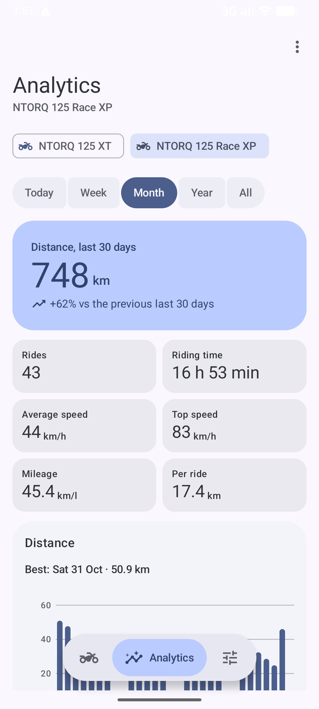
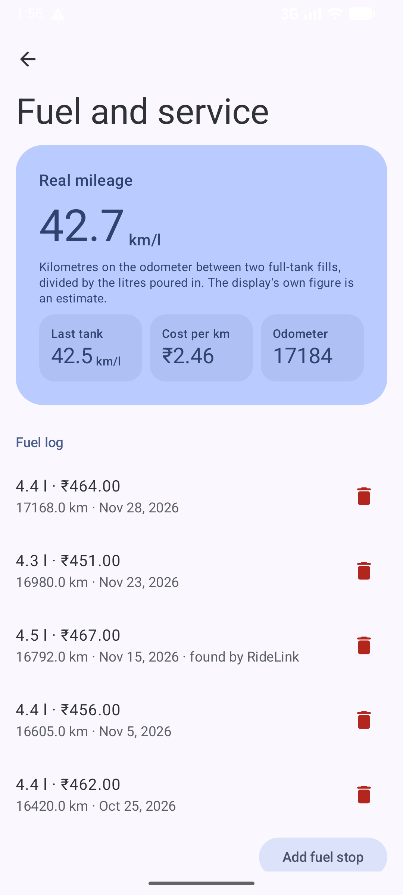
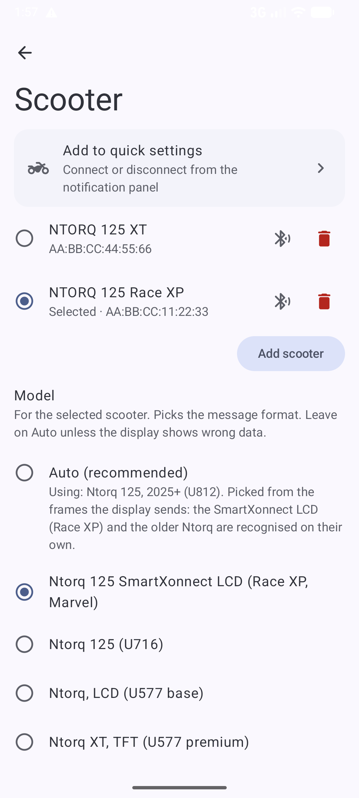
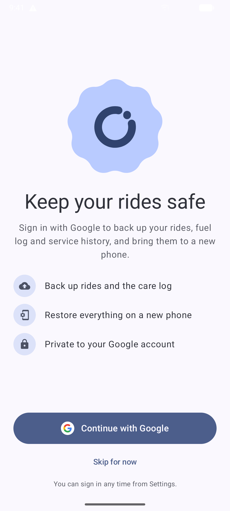
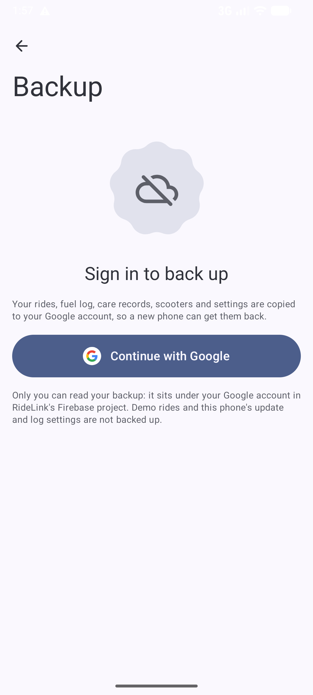
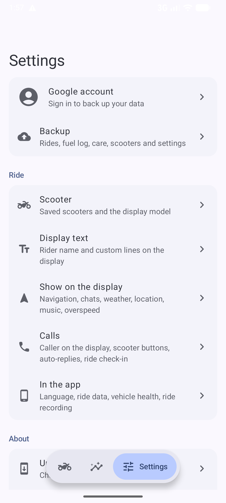
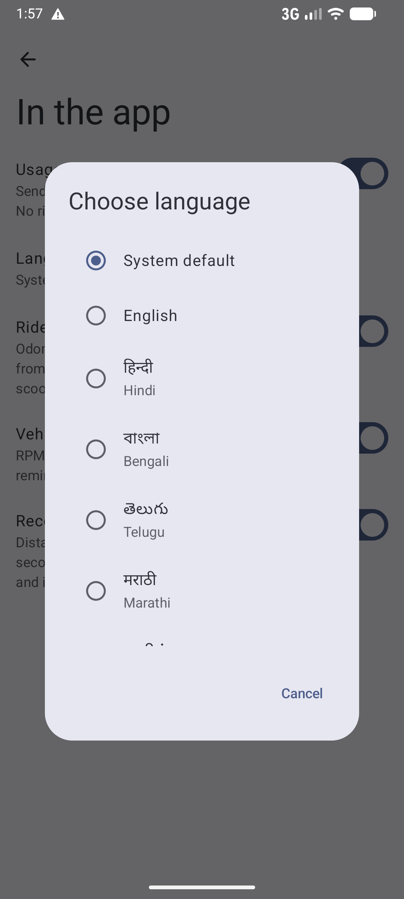
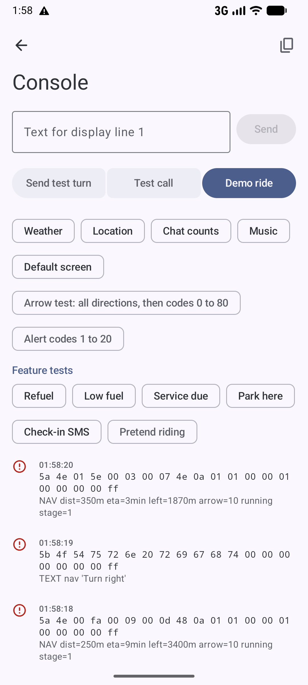

Turn-by-Turn Navigation
Reads Google Maps notifications and sends crisp arrow pictograms, distance, and street names straight to your scooter display.
A private, local-first Android companion app for TVS SmartXonnect scooter displays. Turn-by-turn navigation, caller ID, live telemetry, fuel care, and optional cloud backup — zero forced logins.

From Google Maps arrows on your dash to full-to-full mileage tracking and handlebar call control.
Reads Google Maps notifications and sends crisp arrow pictograms, distance, and street names straight to your scooter display.
See Caller ID on the cluster, accept or reject calls from the handlebar switch, and send missed-call auto-reply SMS templates.
Display track title, artist, playback state, and volume on TFT clusters, plus WhatsApp, Facebook, Instagram, SMS, and delivery alerts.
Track speed, trip, odometer, fuel, range, engine temperature, and MIL. Auto-records rides in SQLite with charts, CSV export, search, and starring.
Full-to-full mileage and ₹/km cost calculation, automatic refuel and low-fuel detection, plus service, insurance, and PUC reminders.
WhatsApp riding auto-reply, check-in SMS with Maps link, last-parked spot, keyless Open-Meteo weather/AQI, and Race XP stats, brightness & CO₂.
Optional Google sign-in to Firestore with scheduled WorkManager sync, conflict resolution (Merge, Use cloud, Keep local), and multi-scooter garage.
In-app GitHub Releases updater (Stable, Beta, Alpha) and a live BLE frame log console with demo navigation and arrow/alert sweeps.
Adaptive light and dark themes with dynamic color, expressive shapes, and a layout built for both portrait and landscape.









Tested on TVS NTORQ 125 Race XP and built for the NTORQ 125 SmartXonnect family.
| Model | Status | Notes |
|---|---|---|
| NTORQ 125 Race XP | Tested | Full telemetry, Race XP stats, brightness, navigation & alerts |
| NTORQ 125 Standard / Race / Super Squad / Marvel | Supported | SmartXonnect LCD cluster navigation, calls, alerts & ride logs |
| NTORQ 125 XT (TFT) | Supported | TFT media metadata, playback, volume & SmartXonnect features |
| U716 / U577 & 2025+ NTORQ 125 | Supported | Updated 2025+ status frame and receiver support |
| NTORQ 150 & other TVS models | Not yet | Under research — report your vehicle on GitHub |
English plus all 22 Scheduled Indian Languages — switch the website language below or inside Settings → In-App → Language.
Download RideLink v1.1.0 for Android 8.0+ directly from GitHub Releases.